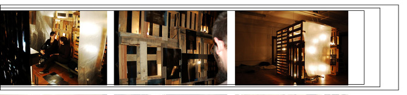
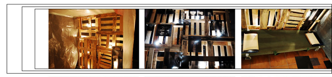

The first project that shows the power of work together. Did it with recycled materials we worked to recreate the softness and the hardness of the body, Fragiles is about the power of the
resistance and insistance in the keeping of an effort.
  Nombre: Siro Santos García y Mario Romera Gómez
Titulo: ”Frágiles”
Dimensiones: 194 cm. altura x 190 cm. ancho x 178 cm. profundidad
Selección para la exposición en el Centro Cultural Gran Capitán dentro de la exposición Arte y reciclaje 2009. Granada.
Un esqueleto sobre otros esqueletos, es la redundancia de la obra, que a través de la estructura humana, alude tanto a los desastres de la guerra como a la fragilidad del hombre. La instalación se presenta en contraste, ya sea por los juegos de luces, como por la serenidad del ambiente con las imágenes dramáticas de prótesis y operaciones. Entra, siéntate y relájate.
Way back